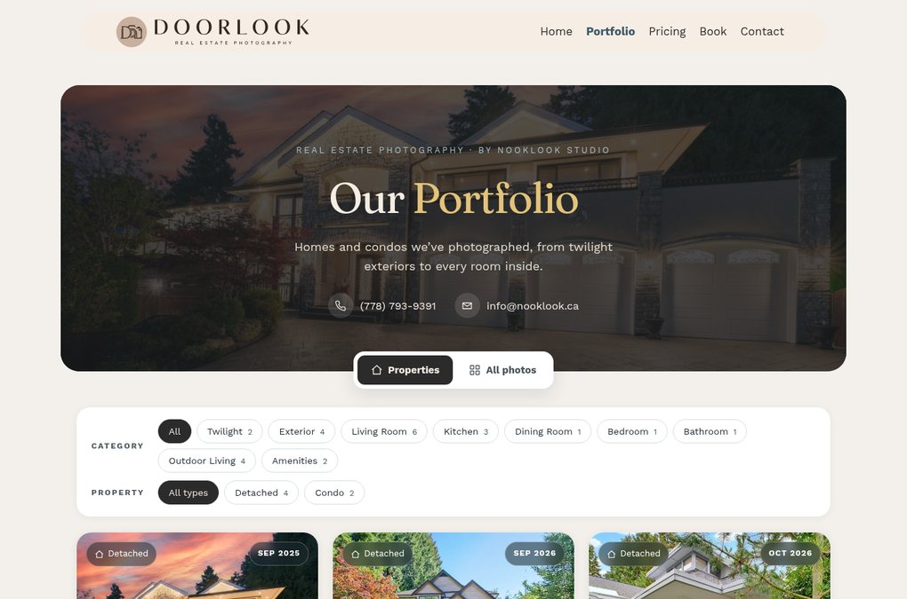
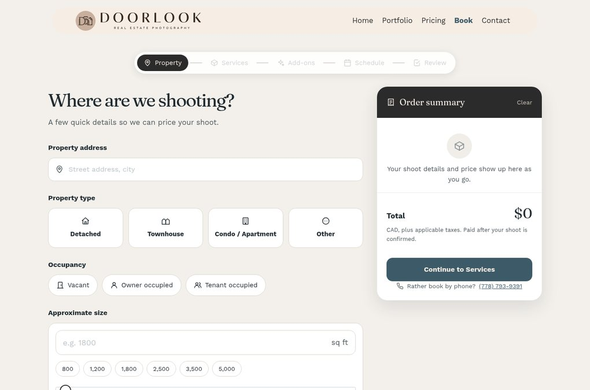
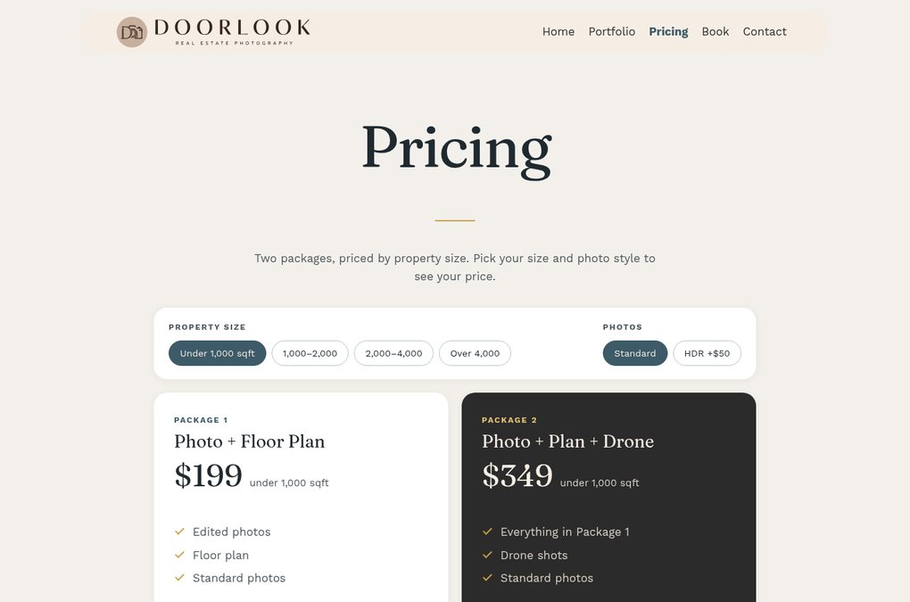
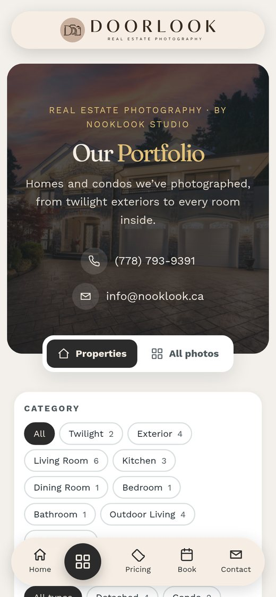

Overview
Doorlook is the real estate photography side of Nooklook Studio, the Coquitlam portrait studio whose site I also built. It shoots listings for realtors: photos, floor plans, drone, twilight and video. The studio wanted a brand of its own for it, and a site where a realtor can see the work, price a shoot and book it in a few minutes without a phone call.
I built the first version in October 2026. After the owners saw how the bigger real estate photography firms handle booking, I rebuilt it around a gallery and a step-by-step booking flow. It launched on November 2, 2026.
The site




The brief
- Its own brand, still clearly part of the Nooklook family
- A portfolio realtors can browse by room, like twilight exteriors or kitchens, not just by house
- Prices shown up front, by property size and photo style
- Online booking that gathers everything a shoot needs: address, access, add-ons and a time
- Fast on a phone, since realtors book between showings
What I built
Brand
The site uses the Nooklook design system with its own palette of warm linen, brown and taupe. The owners sent their logo as a phone photo, and I traced it into a clean vector so it stays sharp in the header, the footer and the browser tab.
Portfolio
There are six real shoots, each with its own page. Filters cover room categories and property types, and visitors can switch between browsing properties and every photo at once, with a lightbox. Shoot titles leave out street addresses, and the share images avoid any photo with a house number showing.
Booking
Booking has five steps: property, services, add-ons, schedule and review. An order summary prices the shoot live from a single price table, and that same table feeds the pricing page. Each booking is saved as a private record in WordPress, the studio gets an email they can reply to directly, and the realtor gets a confirmation.
Speed
The pages are pre-rendered and served from a static cache, so they load in about a quarter of a second. A small plugin warms the cache after every change, and the next page is prerendered before the visitor clicks. The photos are converted to sRGB and resized to 1920 pixels before upload.
Tech stack
Why it is built this way
The whole site lives in a Git repository as code: custom plugins, page content, snippets generated by Python scripts, and a deploy script that rebuilds everything over SSH with WP-CLI. Running it twice changes nothing. That made a full rebuild in a single day safe, with a database backup before every deploy. The owners can still edit anything in the normal WordPress dashboard.
SEO and launch
- Structured data that marks Doorlook as a local business belonging to Nooklook Studio, with its price range and service area
- A share image for every page, made from the real photos, so links look right in texts and social posts
- A sitemap submitted to Search Console, and IndexNow pinged on launch day
- Lighthouse on mobile: 100 for accessibility, best practices and SEO, and 95 or more for performance
- A phone pass after the owners found cramped text on small screens: the theme and the design system were both adding side padding, which left about 250 pixels for text on a 360-pixel phone
Outcome
Realtors can see the work, price a shoot and book it in one visit, and every booking reaches the studio with everything it needs. Nooklook and Doorlook link to each other, so each brand sends visitors to the other.